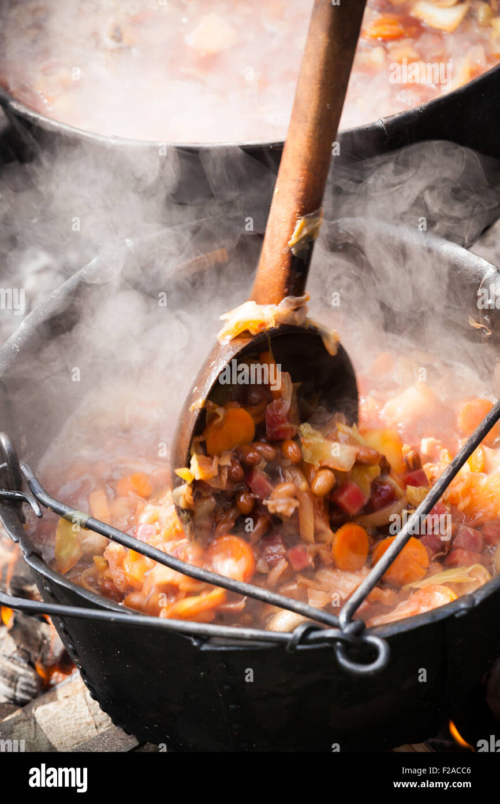

The Hearty Viking Stew...

Description
Ah, by the gods! A staple in the Viking diet, this hearty and soul-warming stew be!
Slow-cooked meats, root vegetables, and a blend of earthy spices come together to form a feast fit for warriors!
Picture this: a cold winter night, the chill biting at yer bones, or after a day of fierce adventure, when hunger gnaws at yer belly.
This be the time to savor the rich and flavorful embrace of this stew, a taste that fills yer heart with strength and yer spirit with valor!
Ingredients
- As much beef or vension as you can carry!
- 2 onions, chopped
- 3 carrots, chopped
- 2 parnsips, chopped
- 4 cups beef broth, stolen from the elves preferably
- 2 tbsp butter, fresh from Whiterun
- 1 tsp salt
- 1 tsp ground black pepper
- 1 tsp dried thyme
- 1 tsp dried sage
- 1 tsp dried rosemary
Steps
- In a large pot, melt the butter over medium heat. Add the onions and cook until softened.
- Add the meat and cook until browned on all sides.
- Stir in the carrots, parsnips, turnips, salt, pepper, thyme, sage, and rosemary.
- Pour in the beef broth, bring to a boil, then reduce the heat and let it simmer for 1-2 hours, or until the meat is tender and the vegetables are cooked through.
- Serve hot with a side of Viking flatbread or rustic rye bread.
Credit
This here recipe was ploundered from this website.
Back to index.